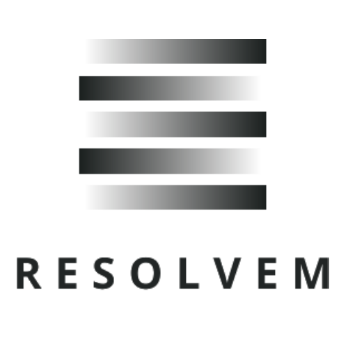
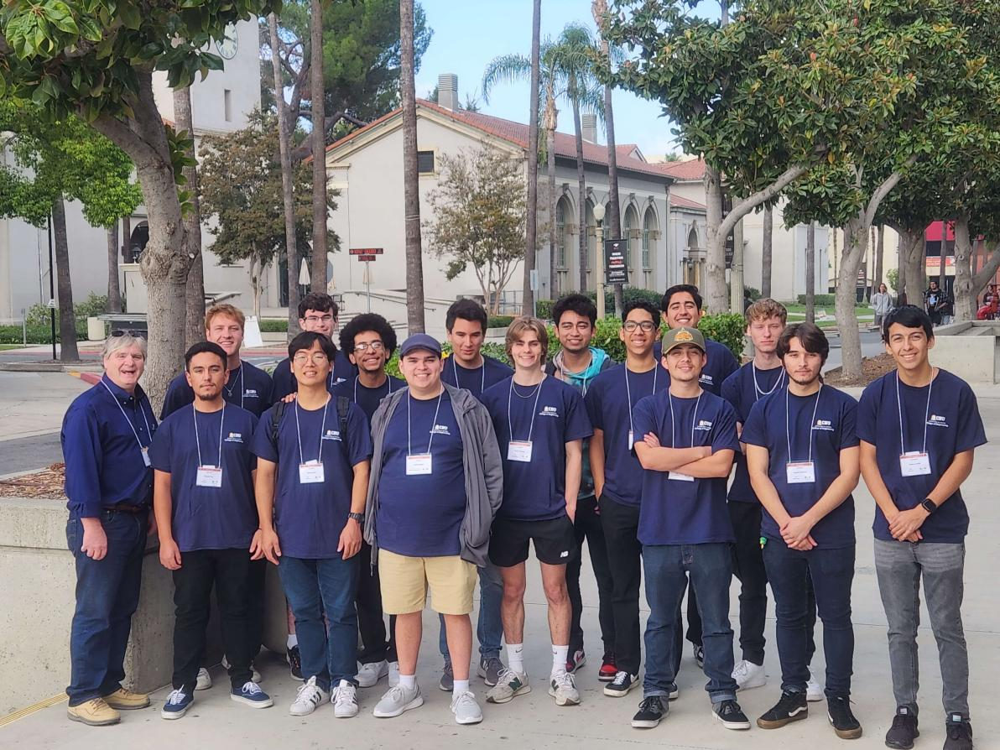
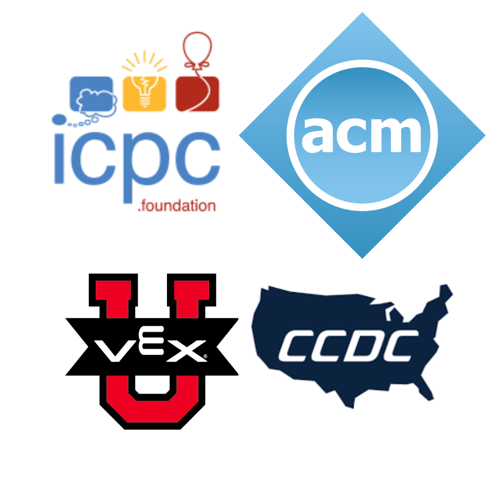
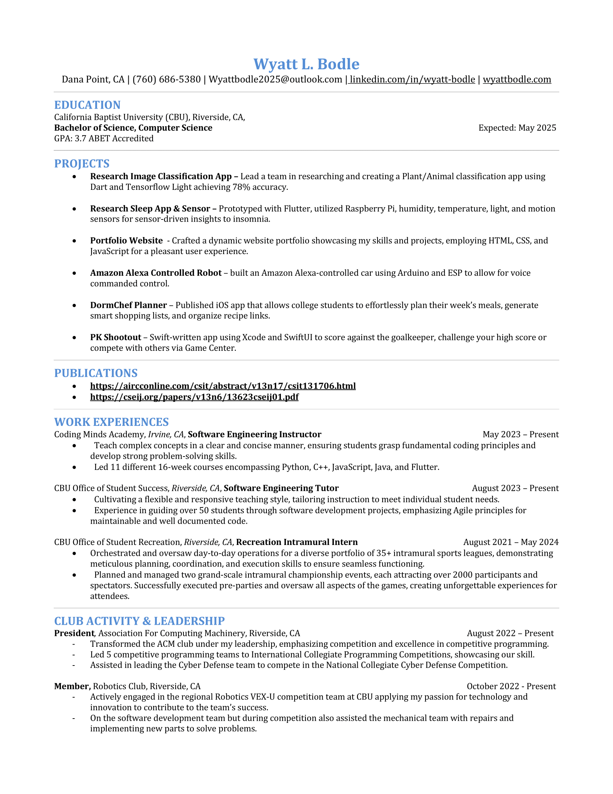

About
I'm a Software Engineer who builds software, internal automations, and full technology systems end to end — and I keep the IT running along the way.
Originally from Victorville, California, my curiosity about how things work turned into a full-blown pursuit of computer science during the Covid-19 pandemic, when I taught myself Swift iOS development. That grew into a Bachelor's degree in Computer Science from California Baptist University (3.75 GPA) and an ongoing Master's in Computer Science, focused on Artificial Intelligence, at USC. Along the way I've led a competitive programming team as President of the ACM Club and mentored students as a Programming Instructor — experience that shapes how I approach building and explaining software today.
Experience

Software Engineer @ Resolvem
Building software, internal automations, and managing IT & technical operations.

X-Force Fellowship @ National Security Innovation Network
Fellowship program applying technology to national security challenges.
Research Assistant @ CBU Machine Learning & AI Lab
Research on applied machine learning, contributing to peer-reviewed publications.
Programming Instructor @ Coding Minds Academy
Teaching programming concepts and languages to students of varying skill levels.
Software Engineering Tutor @ California Baptist University
1-on-1 and group tutoring for software engineering coursework.
Teaching Assistant @ California Baptist University
Supporting course instruction and grading for computer science classes.
Recreation Intramural Intern @ California Baptist University
Coordinated and officiated intramural sports programs on campus.
Customer Service Associate @ California Baptist University
Front-line student services and support.
Education
University of Southern California
Master of Computer Science — Artificial Intelligence
California Baptist University
Bachelor of Computer Science — 3.75 GPA
Projects
Design and build internal automations that cut out repetitive manual work — scripting data syncs, streamlining reporting, and wiring up integrations between the tools a small business relies on every day, alongside general IT and systems support.
Led a team researching animal/plant classification while building an iOS and Android app using TFLite to help identify and learn about different organisms.
Led development of a sleep improvement application built with Flutter for a seamless, cross-platform experience on Android and iPhone.
Software development team member for competitive robotics, also assisting mechanical repairs under tight in-competition time constraints.
An earlier iteration of this portfolio site — planning content, design, and layout from scratch.
An app for coffee enthusiasts to track, rate, and map their favorite coffee shops.
An app for couples to message, plan date nights, and track relationship milestones.
A swipe-to-shoot penalty kick game against a virtual keeper.
A basketball stat tracker for comparing performance across games and opponents.
A voice-controlled car built with Arduino Uno, an ESP Wi-Fi module, and a motor controller.
Leadership
President of the ACM Club at California Baptist University, after joining as a member in 2022. I restructured the club around competition and technical excellence, and led our Competitive Programming team to the International Collegiate Programming Contest. I'm also active on the school's VEX-U Robotics competition team.



Publications
-
Chen, D., & Bodle, W. L. (2023). An intelligent system to enhance mental and physical health through sleep monitoring and recommendations using motion detection and environmental sensors. Software Engineering and Applications, 13(7).
doi.org/10.5121/csit.2023.131706 -
Bodle, W. L. (n.d.). Comparative analysis of verbal languages for computing to determine … Computer Science & Engineering: An International Journal (CSEIJ).
cseij.org/papers/v13n6/13623cseij01.pdf -
Xiao, A., Li, A., & Bodle, W. (2024). An intelligent plant and animal identification mobile application for increased biodiversity awareness and safety using machine learning. Computer Science & Information Technology (CS & IT), 14(4).
doi.org/10.5121/csit.2024.140433
Resume
{kind=link}

Click to download ↓